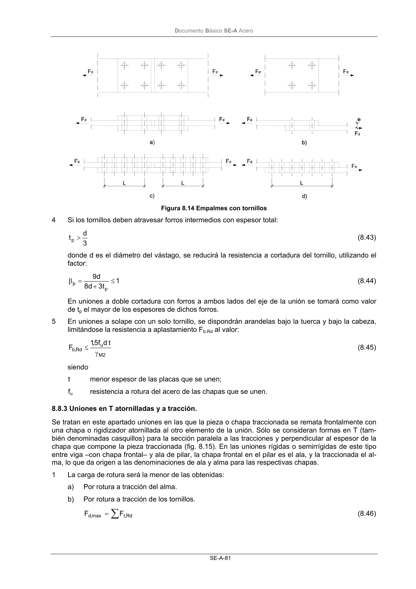

DB-SE-A · 8.8.3 Uniones en T atornilladas y a tracción. · versión 2007-10-23
SHA256: 9ed9ea694aabfbda3bfbbef40dfe9223fde05d13c35bc2ba9751e5a96a22a64f · página física 83 de 168 · métodos de encabezado
solo si están cotejados.
Formatos: Markdown · JSON de bloques · PDF p. 83 · imagen PNG
Documento Básico SE-A Acero SE-A-81 Figura 8.14 Empalmes con tornillos 4 Si los tornillos deben atravesar forros intermedios con espesor total: 3 d tp > (8.43) donde d es el diámetro del vástago, se reducirá la resistencia a cortadura del tornillo, utilizando el factor: 1 t 3 d 8 d 9 p p ≤ + = β (8.44) En uniones a doble cortadura con forros a ambos lados del eje de la unión se tomará como valor de tp el mayor de los espesores de dichos forros. 5 En uniones a solape con un solo tornillo, se dispondrán arandelas bajo la tuerca y bajo la cabeza, limitándose la resistencia a aplastamiento Fb.Rd al valor: M2 u Rd , b t d f 5,1 F γ ≤ (8.45) siendo t menor espesor de las placas que se unen; fu resistencia a rotura del acero de las chapas que se unen. 8.8.3 Uniones en T atornilladas y a tracción. Se tratan en este apartado uniones en las que la pieza o chapa traccionada se remata frontalmente con una chapa o rigidizador atornillada al otro elemento de la unión. Sólo se consideran formas en T (tam- bién denominadas casquillos) para la sección paralela a las tracciones y perpendicular al espesor de la chapa que compone la pieza traccionada (fig. 8.15). En las uniones rígidas o semirrígidas de este tipo entre viga –con chapa frontal– y ala de pilar, la chapa frontal en el pilar es el ala, y la traccionada el al- ma, lo que da origen a las denominaciones de ala y alma para las respectivas chapas. 1 La carga de rotura será la menor de las obtenidas: a) Por rotura a tracción del alma. b) Por rotura a tracción de los tornillos. ∑ = Rd ,t max ,d F F (8.46)
